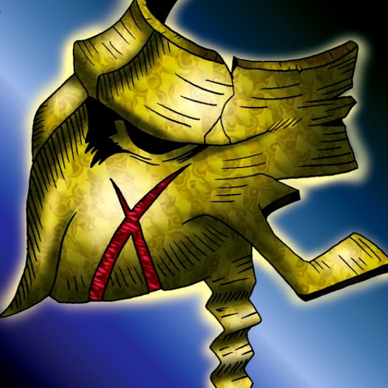

Mask of Darkness

Description: "When this card is flipped face-up, revive 1 SPELL card from the Graveyard and set it in own Summoning Area. This can only be done during the turn of a player controlling a Mask of Darkness card."
STATS
ATK: 900
DEF: 400DECK COST
Deck Cost per Card: 18EFFECT NOT IMPLEMENTED
Fusion List (11 Possible Fusions)
- Mask of Darkness + Arlownay = Rose Spectre of Dunn
- Mask of Darkness + Barrel Lily = Rose Spectre of Dunn
- Mask of Darkness + Celtic Guardian = Dark Elf
- Mask of Darkness + Dancing Elf = Dark Elf
- Mask of Darkness + Dark Plant = Rose Spectre of Dunn
- Mask of Darkness + Griggle = Rose Spectre of Dunn
- Mask of Darkness + Job-Change Mirror = Ryu-Kishin Powered
- Mask of Darkness + Mystical Elf = Dark Elf
- Mask of Darkness + Protector of the Throne = Invader of the Throne
- Mask of Darkness + Rainbow Flower = Rose Spectre of Dunn
- Mask of Darkness + Wicked Dragon with the Ersatz Head = Blackland Fire Dragon